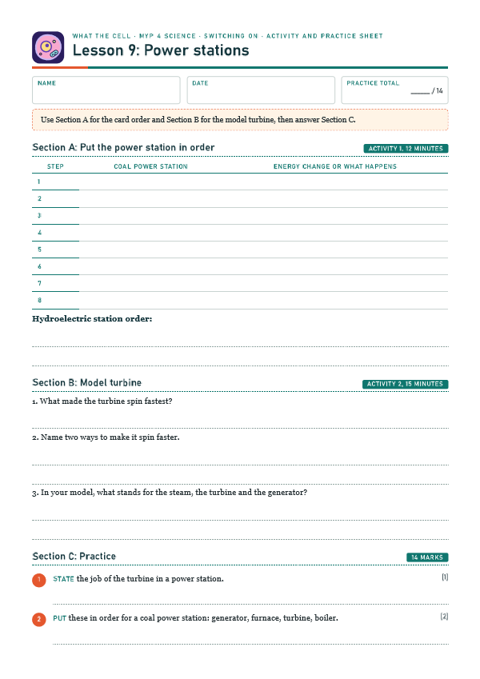

By the end of the lesson you can
- Describe the stages in a thermal power station
- Explain the job of the boiler, turbine and generator
- Describe how a hydroelectric station works
- Explain why the grid uses high voltages
Keys: arrows or a presentation clicker move the slides, F for full screen. Slides with a red dot have a video or simulation.
Videos (all 5 minutes or less)
- 3:36
Power stations and the national grid
FuseSchool. While you watch: What spins the turbine in a coal power station? Slide 12.
Simulations
- Lab
- PhET
Print and practise

Activity and practice sheet
Used in the lesson’s activities, with practice questions. Your teacher has the answers.
Download (PDF)Lesson 9 slides
All 19 slides in one file, to read again or print. The video buttons on the slides open YouTube.
Download the slides (PDF)Revising? The Revision tab on the unit page has the unit notes and review.
Class activity pack
Everything to print for the lesson’s activities: picture cards, sorting mats, station cards with their kit lists, and the teacher’s set-up notes. Print it before class.
Download the activity pack (PDF)Notes: Power stations
boiler
Where fuel burns to boil water into high-pressure steam. For example: a giant kettle.
turbine
A wheel of blades that steam, water or wind pushes round. For example: turbines in a dam.
generator
A machine that turns kinetic energy into electrical energy using magnets and coils. For example: next to every turbine.
transformer
Changes the voltage of electricity up or down. For example: the grey boxes on poles.
national grid
The network of cables that carries electricity across the country. For example: pylons and power lines.
cooling tower
Cools the used steam back into water. For example: the huge chimneys at power stations.
Key words
| boiler | burns fuel to make high-pressure steam |
|---|---|
| turbine | blades spun by steam, water or wind |
| generator | changes kinetic energy into electrical energy |
| transformer | steps the voltage up or down |
| national grid | the network of cables across the country |
| cooling tower | turns used steam back into water |
| alternating current (AC) | current that changes direction many times a second |